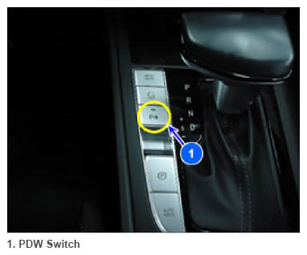

PDW Switch
 Courtesy of HYUNDAI MOTOR AMERICA
|
The parking Assist system switch is a on-off switch. When it is on, it turns on the PDW; when it is off, the PDW stops. When a lamp flickers, it means that there is an error in diagnostic communication.